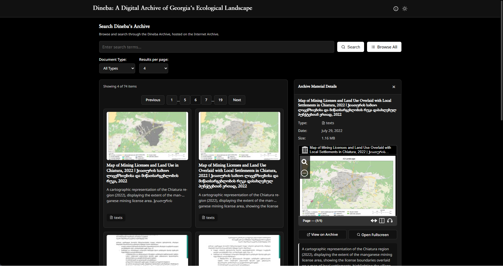
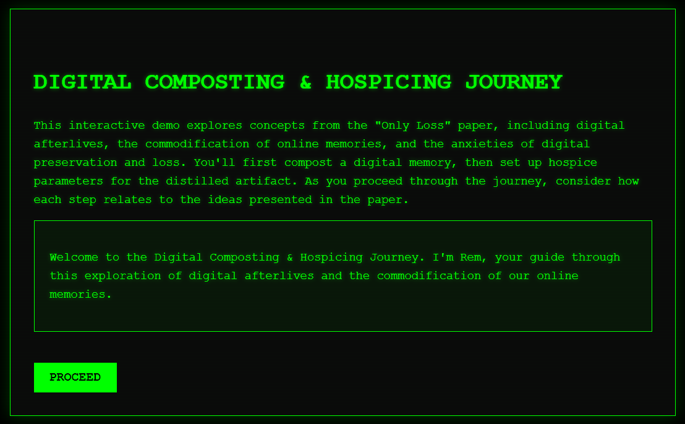
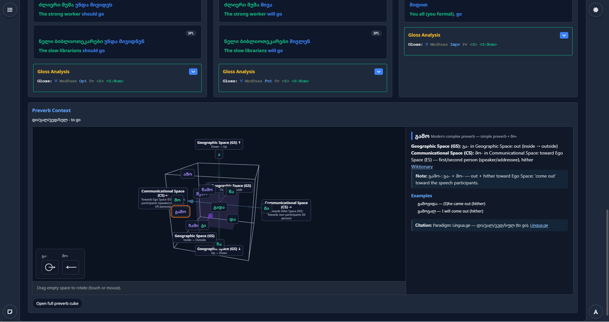

Digital Archiving Portfolio
Hello, I'm Michael Baldwin (maintainer of the c-host project) and this is my digital archiving portfolio.
I am a multidisciplinary artist and researcher based in Tbilisi, Georgia, working at the intersection of digital archives, preservation, governance, experimental media, and participatory infrastructure design.
My practice focuses on how communities steward memory online: not only through preservation, but also through intentional transformation, decay, and loss.
Below is a selection of my work across these fields, including projects, writings, and reflections.
OPEN TO COLLABORATION & ROLES:
I am seeking to build on my past contributions to archival and governance ecosystems through deeper institutional and practical engagement in digital archiving work.
I bring experience in program design, artistic curation, community management, and project management across distributed teams
If you are hiring or looking for a collaborator in digital archiving, preservation, or community-governed knowledge systems, I would love to connect.
RESEARCH & PRACTICE THEMES:
- Community-governed archives
- Digital preservation and intentional loss
- Audiovisual and oral-history infrastructure
- Metadata and information stewardship
SELECTED PROJECTS:
-
Dineba: Community Digital Archive Interface

-
Digital Archive Composter and Hospicer

- PhD Thesis: Documents and/of/as Musicking Bodies
ADJACENT WORK:
- Digital Governance and Community Infrastructure
-
Bagh / ბაღ

TECHNICAL & ARCHIVAL LEARNING:
- Current tools and workflows
- Currently studying
WRITINGS, REFLECTIONS, & PRESENTATIONS:
- Only Loss
- Humans as Living Archives
- The DWeb Long Echo: Reflections from Redwood Parliament
- Personal Blog